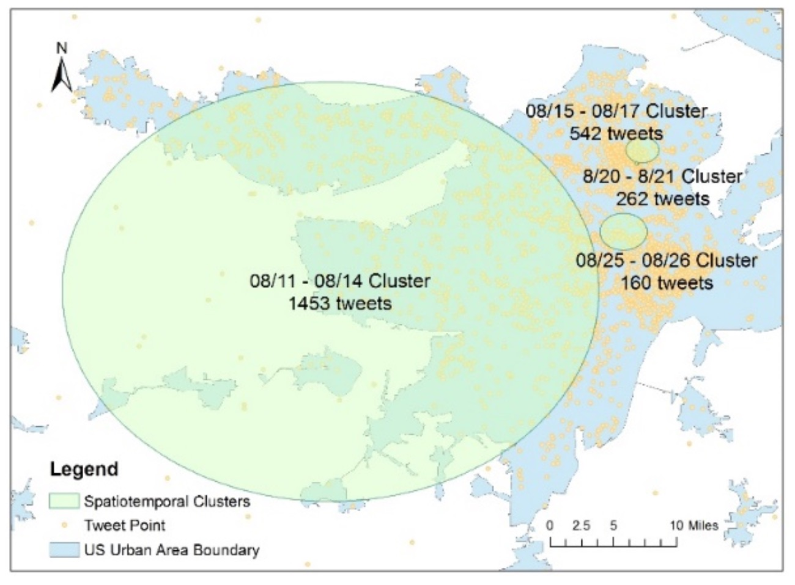
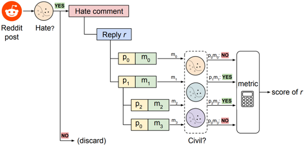
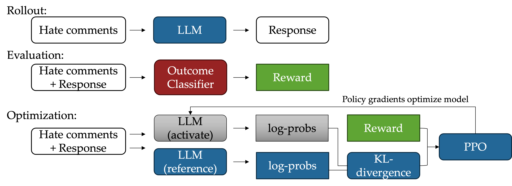

Dr. Lingzi Hong
Human-Centered Computing Lab
Research Statement
The human-centered computing lab at UNT is dedicated to advancing the field of computing by prioritizing human needs, behaviors, and experiences. Our mission is to develop innovative methodologies for understanding and enhancing the interaction between humans and sociotechnical systems.
Interdisciplinary approaches, including advanced computing techniques, quantitative analysis, qualitative user studies will be employed for a holistic examination of human perception and cognition, to decipher the complex interactions between humans and sociotechnical systems. The insights are applied for decision-making and creating intuitive and empowering digital applications. By focusing on user-centered computing, we aim to ensure that technology serves to augment human potential, being transparent, and under control.
Insights from Human-System Interaction for Decision Support
The interactions between users and a multitude of sociotechnical systems generate extensive and rich data, providing a window into the diverse behavior patterns and specific needs of different users. This data, encompassing a wide range of activities and interactions, is invaluable for understanding how users engage with technology and what they require from these interactions. By employing advanced data analytical techniques, we can analyze this user-generated data to uncover hidden patterns, trends, and correlations. This process allows us to derive critical decision-support information, which can inform and enhance the development and delivery of user services.
The approach is to employ a triangulation method that combines data-driven insights and user study findings to develop a comprehensive understanding of user behaviors and needs. For data-driven insights, we use advanced computational methods to gather and analyze data, including communication and spatiotemporal data generated when users interact with systems. This method also involves qualitive research, such as interviews and surveys for holistic and actionable insights. The result can assist in policy decision-making as well as application design.
Information Needs in Crisis

Crisis events disrupt the normal functioning of individuals, groups, or systems, and can result in damaging impacts in various scenarios, including natural disasters, public health emergencies, and economic collapses. They present significant challenges or threats to the safety and well-being of individuals and can strain resources and exacerbate inequalities. Immigrants in under-resourced communities are especially vulnerable. Due to language barriers, legal status, social marginalization, and cultural differences, immigrants often face challenges in the access to related information, government assistance, and social support for crisis preparedness, response, and recovery.
The project will identify the most in-need US counties with high immigrant ratios, high crisis risks, and low resources, which will be the study areas to investigate: RQ1: What are the information needs of immigrants in crisis in under-resourced communities? RQ2: What is the status of public services for immigrants in crisis?
This project is funded by the IMLS National Leadership Grants: LG-256661-OLS-24
Social Media Discourse in Civil Crisis

Social media has become a crucial platform for real-time communication and information dissemination during civil crises. The discourse on social media during civil crises encapsulates a dual narrative of unity and dichotomy. Collective actions and empathy can be formed through hashtag activism and mobilization. While such platforms also polarize: misinformation and disinformation spread and tensions exacerbate. The analysis of social media discourse in these events provides valuable insights into public sentiment, information flow, and the dynamics of crisis communication. We are especially interested in analyzing the dichotomy narraitve, the influencers, and dynamics of discourse development.
By leveraging advanced data analytics and natural language processing techniques, we can sift through vast amounts of social media data to identify key themes, sentiments, and influential actors in the discourse, to reveal how information spreads, the role of misinformation, and the ways in which different communities perceive and react. This understanding can inform the strategies of policymakers, emergency responders, and civil society organizations to enhance crisis communication and improve public safety.
Insights from Human-System Interaction for AI Development
While current artificial intelligence systems have made significant strides in understanding and responding to human language, there are still notable gaps in their ability to fully grasp and adapt to the complexities of human emotions, behavioral patterns, and cultural contexts. These limitations can result in interactions that feel mechanical and lack the depth of understanding required for truly intuitive and empathetic communication. Our goal is to create AI, particularly in dialogue systems, that can capture the nuances of human behavior and respond appropriately to user actions.
We develop AI models, particularly computational linguistic models, that can integrate the insights of human communications in sociotechnical systems based on data-driven and user study methods. We use computing-based and user-based methods to evaluate and assess the effectiveness and applicability of different AI models in terms of their capability in understanding human emotions and behavioral logic.
Effectiveness of Counter Speech

User-generated replies to hate speech/misinformation are promising means to combat hatred, but questions about the real impact of the counter speech online linger. Effective replies can stop incivility from emerging in follow-up conversations but replies that elicit more incivility are counter- productive. We aim to propose methods to: (i) evaluate the immediate effectiveness of counter speech to hate speech/misinformation through natural language processing and user modeling; (ii) investigate the linguistic and user-level factors relevant to the effectiveness; (iii) build language models or multi-modal models for the prediction of the effectiveness of counter speech.
The project will use a combination of data-driven and user studies to reveal valuable insights about what constitutes effective counter speech, which will enrich our understanding of the proactive defense from communication perspective. By leveraging advanced data analytics and natural language models, the project will develop innovative models for predicting the effectiveness of counter speech and provide solutions for transitioning research into practice.
Outcome-Constrained Diague Generation
 Counter speech (CS) that challenges or counteracts harmful and discriminatory messages has been seen as an effective way to diminish the influence of HS. Automatic CS generation methods have been developed to assist efforts in combating online HS. Existing research focuses on generating CS with linguistic attributes, such as being polite, informative, and intent-driven. However, the real impact of CS in online environments is seldom considered. This project aim to address the following questions: (i) How can the constraints of conversation outcomes be incorporated into the development of LLMs for generating CS? (ii) How effective are these methods in generating outcome-oriented CS?
We experiment with large language models (LLMs) to incorporate different desired conversation outcomes, e.g., low conversation incivility, into the text generation process, using methods such as instruction prompts, LLM finetuning, and \LLM reinforcement learning (RL). We evaluate CS generation models with computing-based metrics and human evaluations to understand the strengths and weaknesses of different methods. The study holds potential for broad applications. Anticipating the direction of a conversation is crucial in crafting effective responses, allowing the conversation to meet the objectives of the interaction (e.g., reducing hate speech, altering user behavior, and promoting positive discourse).
Human-centered Evaluation of Emerging Technologies
The rapid development of artificial intelligence (AI) has brought about significant advancements in CV and NLP. However, the application of these technologies in traditional domains and their acceptance by users often require extended periods of time. We seek to explore the factors influencing user acceptance of specific AI applications and identify the key issues that should be considered for their successful implementation.
The approach is to conduct user studies and human-centered design to understand how these cutting-edge technologies can be integrated into traditional fields, assess their practicality and effectiveness, and identify possible application directions where these technologies can make the most significant impact.
Evaluate the Acceptability and Applicability of LLM for Cataloging

The current era of unprecedented information proliferation and increasing multilingual diversity challenges libraries’ traditional cataloging and resource management processes. Cutting-edge artificial intelligence (AI) tools known as large language models (LLMs), which excel at processing natural language, have the potential to assist librarians in their quest to organize and provide access to their ever-growing collections. We aim to address two main questions. RQ1: How can LLM-based models be developed to generate accurate cataloging results, particularly classification and subject analysis, for both English and foreign language resources? RQ2: How can AI models be integrated into cataloging procedures to assist librarians?
We will conduct experiments to identify the performance of LLMs in traditional cataloging tasks. Then, we will conduct user studies based on the conceptual framework to identify the factors relevant to librarians' acceptance of LLM in assisting cataloging. We will also conduct interactive user designs to identify how LLMs can be applied to assist librarians.
This project is funded by the IMLS National Leadership Grants: LG-256666-OLS-24
Assessing the Readiness to Implement Linked Open Government Data
This is a dissertation project led by my PhD student Irhamni.
Many countries implemented the Linked Open Government Data (LOGD) in public libraries to provide transparency and reuse of government services through the access to government data. Indonesia's government agencies libraries have been identified as the main venues to implement Open Government Data (OGD) services. However, it is unknown whether these libraries are ready to support OGD and what to improve to prepare these libraries for OGD.
This study adopts the readiness theory and the Technical-Organization-Environment (TOE) framework as a theoretical lens to analyze the readiness to embrace LOGD in Indonesia’s government agencies libraries. This framework investigates the influence of technical capabilities, organizational structure, and environmental elements on the adoption process. The research aims to address four questions: First, what factors should be considered to assess the readiness LOGD implementation in government agency libraries in Indonesia? Second, how are the factors related to the readiness of LOGD implementation in government agency libraries? Third, why are certain factors related to the readiness of LOGD implementation in government agency libraries in Indonesia? Fourth, how to increase the readiness of LOGD implementation in government agency libraries in Indonesia?
The study employed a mixed-methods approach (quantitative and qualitative), encompassing surveys and interviews, to gather data from a representative sample of libraries inside Indonesian government agencies. The preliminary research results indicate that the complexity of technology is consider not a significant matter in the readiness of OLGD implementation in Indonesia. The research also found that only three factors are related to the readiness in implementing LOGD in libraries. The present study provides a significant contribution to the continuing discourse pertaining to open government initiatives. This paper offers practical suggestions for bridging existing gaps and accelerating the use of LOGD in the library setting of Indonesian government organizations.
Interdisciplinary Collaborations
Data Literacy Needs and Scale Development
The Data Literacy for Community College Project is intended to examine the current perspectives of community college librarians, faculty, and students regarding data literacy and identify the data literacy competencies needed for community college students. With this information, the project will develop data literacy action plans for community college libraries, which will assist community college librarians in assessing their capacity and creating a roadmap to incorporate data literacy into their existing literacy programs.
The project was supported by the IMLS grant: RE-252374-OLS-22 and RE-256673-OLS-24.
ML/AL Applications in Communication and Education
We also actively collaborate with other researchers in Communication and Education, using advanced computing techniques to address research questions in these areas.
Facilities
Computing Resources
- Server e292e: It has an Intel Core i7 processor, 32GB memory, 512 GB hard drive, and 2 Nvidia graphic cards: an RTX 2080 and a GTX Titan XP.
- Server soccomp: The server is managed by the Computing for Arts and Sciences of UNT. It has an Intel Xeon Gold 6226R processor, 128 GB memory, and 3 Nvidia RTX 8000 graphic cards.
- Server TBD: We are expecting a new server in Fall 2024.